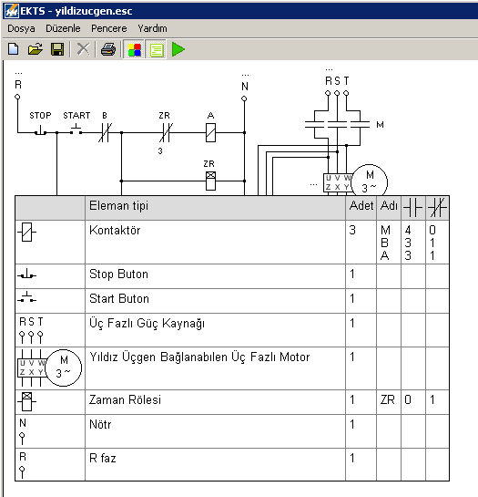

[prew] [next]
Kullanılan elemanları listele
Kullanılan elemanları listelemek için:
- Araç çubuğunda bulunan Kullanılan Elemanları Listele düğmesine veya Pencere > Kullanılan Elemanları Listele menüsüne tıklayın.
- Oluşturulan listeyi istediğiniz konuma farenin sol tuşunu basılı tutarak sürükleyin ve bırakın.
Listeyi gizlemek için yine Kullanılan Elemanları Listele düğmesine tıklayın.

Şekil 11 Devrede kullanılan elemanların listesi.